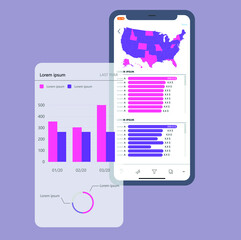

In this data analyst project, I successfully executed a comprehensive data cleaning process using SQL. By leveraging various SQL queries and functions, I proficiently tackled missing values, duplicates, and inconsistencies within the dataset. The resulting clean dataset not only improved data quality but also enhanced the accuracy and reliability of subsequent analyses, demonstrating my proficiency in data preparation and SQL proficiency.
In this project, we will use the algorithm to predict whether a transaction is from a loyalty customer or not. We will use
the TECA dataset.TECA desires to increase their loyalty customers and the number of products a loyalty
customer buys, because loyalty customers create more business and more profitable
business for TECA.
The aim of this analysis is to predict the medical expense based on patients'information.
In this compelling Tableau project on market basket analysis, I explored and visualized customer purchasing patterns to uncover valuable insights. By leveraging Tableau's powerful analytics and data visualization capabilities, I identified frequently co-occurring product combinations and association rules within the dataset.The intuitive and interactive dashboards I created allowed stakeholders to understand cross-selling opportunities, optimize product placements, and make informed business decisions, showcasing my expertise in data analysis and data-driven decision-making using Tableau.

In this impactful project showcasing HR analytics, I designed a comprehensive and visually engaging dashboard using Power BI. By integrating multiple HR data sources, I presented key workforce metrics, such as employee turnover, performance, and engagement, in real-time. The interactive visualizations and drill-down capabilities enabled HR managers to gain deeper insights into workforce trends, identify retention opportunities, and make data-driven HR strategies. This Power BI dashboard exemplifies my proficiency in HR data visualization and analytical skills, highlighting the potential for data-backed HR decision-making.